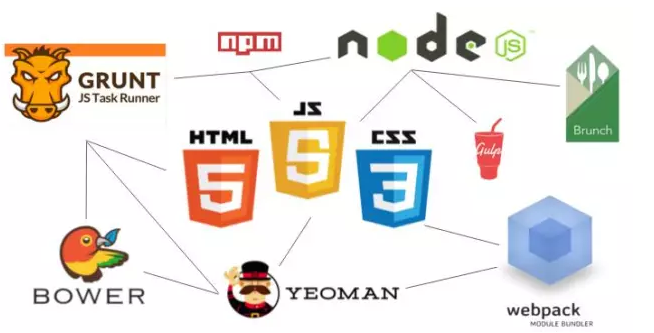
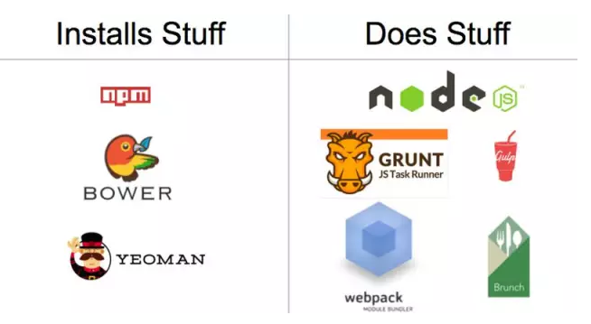
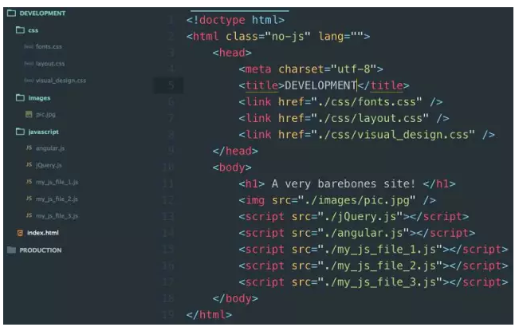
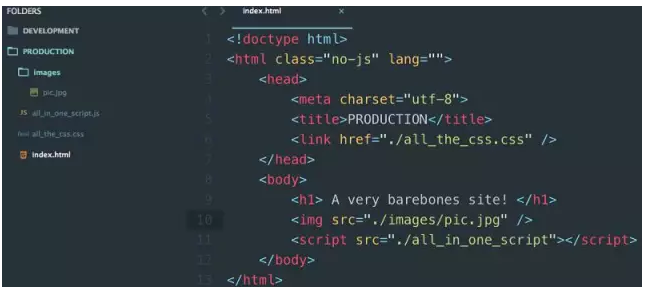
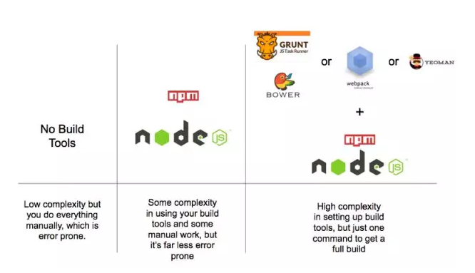

明明白白我的心，渴望一份好工具，曾经为你伤透了心，为什么甜蜜的梦容易醒~
啊哈，我终于弄懂了你，在浩瀚的人群中~
###我要报菜名了，你可别晕阿
####Node, NPM, Grunt, Gulp, Bower, Webpack, Browserify, Yeoman, Brunch……

诸多的名词让你一时间感到手足无措，好像根本学不完。即使对于一些经验丰富的开发者来说，诸多的前端工具还是会让他们感到头痛。
别担心，要知道，所有这些工具，其最初的设计目的，都是要让你的工作变得更简单。
要想弄明白这些工具是什么、如何工作以及为何要使用它们，你其实只需要抓住少数几个核心概念。
概念1：build工具的两大核心功能，就是“安装vs做事”
从本质上说，开发工具做的事情就两个：
1、帮你安装东西
2、帮你做事
当你接触到一个新的开发工具的时候，你首先需要搞清楚一个东西：“这个工具的目的是帮我安装东西，还是帮我做事？”
安装类的工具
例如npm、Bower和Yeoman几乎什么东西都能装
它们可以用来安装前端库，例如Angular.js或是React.js。
它们还可以为你的开发环境安装服务器。
它们可以安装测试库。
它们甚至可以帮你安装其他的前端开发工具。
简而言之，任何你能想到的与代码有关的东西，它们都能安装。
做事类的工具
例如Grunt、Webpack、Require.js、Brunchu和Gulp则更加复杂一点。这类工具的目标，是在web开发中帮你完成自动化。
有的时候，这类工具所做的事情，被称为“任务（task）”。 为了完成这些任务，这类工具经常需要自己的包和插件生态。每一个工具都会使用不同的方式来完成任务。这些工具所做的事情也不尽相同。
一些工具，擅长处理那些你所指定的任务，例如Grunt和Gulp等工具。>还有一些工具，只只专注于一件事情，例如处理JavaScript的依赖，例如Browserify和Require.js等工具。
有的时候，你在一个项目之中可能需要使用多种工具。例如，我就曾在一个项目中使用了不同的工具来将下列任务进行自动化处理：
1、在一个文件中替换文本字符串
2、创建文件夹，并且将文件转移到这些文件夹中
3、用一条单一命令运行单元测试
4、在我保存文件的时候刷新浏览器
5、所有JavaScript文件整合为一个文件，将所有CSS文件整合为一个文件
6、对所有JavaScript和CSS进行简化处理
7、在html页面中修改
在你理解了前端工具分为安装类工具和帮你做事的工具之后，你就可以轻松的对它们进行归类：

概念2：build工具的“祖宗”是Node和npm
Node和npm负责安装和运行所有这些工具，因此你的所有项目中都会有它们的身影。由于这个原因，很多开发者在安装新的工具之前，都会尽可能的尝试使用这两个工具解决问题。
它们两个一个负责安装，一个负责帮你做事情。Node是做事工具，而npm则是安装工具。
npm可以安装Angular.js和React.js等库。它还可以安装服务器，让你的应用在开发阶段可以在本地运行。它还可以安装很多其他工具，帮你完成很多事情，例如简化代码。
而Node，则是帮你完成事情的，例如运行JavaScript文件，以及服务器等。 如果你刚刚开始学习，那么Node和npm都是必学的东西。随着你的项目不断丰富，你将会逐渐知道这两个工具的极限能力。当它们无法满足你的需要的时候，就是你需要开始安装其他工具的时候了。
概念3：build其实就是production-ready版本的应用
开发者经常会把JavaScript和CSS拆分成独立的文件。
独立文件的好处，是让你可以专注于编写针对性较强的代码，让每一部分代码只针对一个问题，以免日后代码多到让你自己都难以管理。但是当你的应用准备好被推向市场的时候，项目内存在多个JavaScript或是CSS文件并不是一个好主意。当用户访问你的网站的时候，每一个文件都需要独立的HTTP请求，这会让站点加载速度下降。
解决方法就是，给项目创建“build”，它要将所有CSS文件合并成一个文件，然后再合并JavaScript文件。这样一来，你就可以将文件完成最小化。要想创建这个build，你需要使用build工具。
下图是一个开发阶段的应用，注意到了吗，里面有10个文件

下图是相应的build阶段的应用，里面的标签和标签的数量都编程了一个。而DEVELOPMENT文件夹被PRODUCTION文件夹替代，里面的文件数量也从10个变成了4个。

应用代码其实并没有变，我们只是把代码变得看上去更简洁而已，这就是所谓的“build”。
你可能会想，build这东西真的有必要吗？它的作用不过是节省用户几毫秒的时间而已。如果你的站点只有你自己，或者身边少数的几个人在开，那么你不用费劲的做build。但是如果你的站点或是应用有着较高的流量，那么你就必须做build。
因此，如果你只是在学习开发的阶段，或者你的站点流量较低，你没有必要花时间和精力去生成build。
概念4：“安装”和“做事”之间的界限有时会模糊
没有工具只能做一件事情，而无法做另一件事情。所有工具都是“安装”和“做事”的结合体。但是一般来说，一个工具会有自己的强项，或是强于安装，或是强于做事。
有的时候，一个安装类工具也能运行文件。npm就是这样，它也能运行命令和脚本，不仅仅是安装文件。
概念5：“最正确工具组合”这么个东西不存在
使用哪些工具，完全是你自己说了算的事情。
你也可以选择什么工具都不用。但是要记住，随着项目的发展，复制、黏贴、整合、开启服务器等事情会让你慢慢手忙脚乱起来。
你也可以只使用Node和npm，其他工具一概不用。对于新手来说，这种方式很好，但是和上一条一样，慢慢你会开始感到力不从心。
或者，除了Node和npm之外，你也可以使用少数几个其他工具。那么，你的开发过程将会以Node和npm为核心，然后搭配Grunt和Bower，或是Webpack或是Gulp和Bower。
使用正确的工具，能够帮你将很多繁琐的事情实现自动化。但是使用工具的代价，就是你需要付出学习成本。

概念6：build工具学习成本较高，因此你只需要学习你用的上的工具
项目开发本身就已经很复杂了，你可能要使用新的语言或是框架。你可能需要应付复杂的业务逻辑。而引入新的工具，只会让你的学习成本变得更高。
对此，我的建议是，只学习那些你用的上的工具，其他的就先缓一缓吧。
学习任何一种新东西，最好的方式就是进行实践。例如，不要为了学习Grunt而去学习，你可以在你的项目中去尝试运用。
概念7：所有build工具目标都一样：通过对大量低技术含量任务完成自动化，让你的工作变得更轻。
使用build工具最开心的时刻，就是我所谓的“build工具涅槃”时刻，在这个时候，你会觉得自己充分发挥了工具的所有潜力。这个时刻，你是你保存了一个文件，或是运行了一条命令之后，成千上万个任务自动运行的时候。
如果你的工具依然要求你手动移动文件、更改值、或是运行命令才能获得新的build，那说明你还没有迎来涅槃的时刻。
使用build工具最大的好处之一，就是在保存了一个文件之后，你就能创建一个新的build，并且将其发送到你的浏览器中。它能够显著的提升前端开发流程的速度。
那么我们应该在配置和调试build工具的时候，应该付出多少精力？很简单，如果你对当前工具的效果感到满意，那就可以停止配置了。
概念8：不是你自己的问题，有的时候这些工具的说明文档写的是挺烂的
我保证，不仅是你会这样想。很多工具的说明文档写的都很烂。有的时候，连搞清楚工具最基本的功能都是一件很困难的事情。你会发现，很多人都和你有一样的困扰。 虽然这样的文档有点让人讨厌，但是同时也给了你一个机会，让你去发挥创意和你的编程能力。
毕竟，我们的工作不就是解决问题么？
原 文：I finally made sense of front end build tools. You can, too.
译 文：SDK.cn
作 者：Christian（编译）